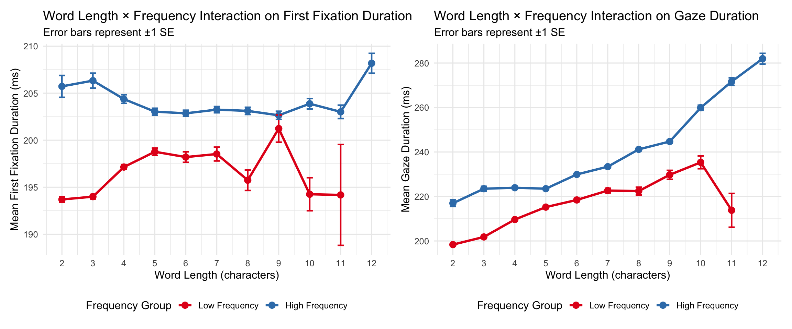

Main Analysis: Word Length × Frequency Interaction
The exploratory visualizations above reveal robust effects of word length, frequency, predictability, and part of speech on reading behavior. A natural question arises: do these effects operate independently, or do they interact?
This section investigates the interaction between word length and word frequency—two of the most fundamental predictors of eye movements during reading.
Research Question
Does the effect of word length on fixation duration differ for high-frequency vs. low-frequency words?
Background
Both word length and word frequency are well-established predictors of eye movements during reading:
- Word length effect: Longer words receive longer fixations and are less likely to be skipped (Rayner, 1998)
- Frequency effect: High-frequency words are processed faster and skipped more often (Inhoff & Rayner, 1986)
However, these effects may interact. One hypothesis is that readers can recognize short, high-frequency words rapidly through holistic pattern recognition, while longer and less frequent words require more serial, letter-by-letter processing. This predicts:
Hypothesis: The word length effect should be stronger for low-frequency words than for high-frequency words.
Create Analysis Variables
# Create median split for frequency (high vs low)
freq_median <- median(ia_clean$wordfreq_frequency, na.rm = TRUE)
ia_analysis <- ia_clean %>%
filter(word_length_no_punctuation >= 2 & word_length_no_punctuation <= 12) %>%
mutate(
freq_group = ifelse(wordfreq_frequency >= freq_median, "High Frequency", "Low Frequency"),
freq_group = factor(freq_group, levels = c("Low Frequency", "High Frequency"))
) %>%
filter(!is.na(freq_group))
# Check group sizes
cat("Observations per frequency group:\n")## Observations per frequency group:table(ia_analysis$freq_group)##
## Low Frequency High Frequency
## 315767 319056Interpretation: The median split creates two roughly equal-sized groups: Low Frequency and High Frequency words. Having balanced group sizes ensures that our statistical comparisons have adequate power and that differences between groups are not driven by unequal sample sizes. Words with lengths 2-12 characters are included to focus on the range where most meaningful variation occurs.
Visualization: Interaction Plot
# Summary by word length and frequency group (for plotting)
interaction_summary <- ia_analysis %>%
group_by(word_length_no_punctuation, freq_group) %>%
summarise(
mean_FFD = mean(IA_FIRST_FIXATION_DURATION, na.rm = TRUE),
se_FFD = sd(IA_FIRST_FIXATION_DURATION, na.rm = TRUE) / sqrt(n()),
mean_gaze = mean(IA_FIRST_RUN_DWELL_TIME, na.rm = TRUE),
se_gaze = sd(IA_FIRST_RUN_DWELL_TIME, na.rm = TRUE) / sqrt(n()),
n = n(),
.groups = "drop"
)# First Fixation Duration interaction plot
p_ffd_interaction <- ggplot(interaction_summary,
aes(x = word_length_no_punctuation, y = mean_FFD,
color = freq_group, group = freq_group)) +
geom_line(linewidth = 1.2) +
geom_point(size = 3) +
geom_errorbar(aes(ymin = mean_FFD - se_FFD, ymax = mean_FFD + se_FFD),
width = 0.2, linewidth = 0.8) +
scale_color_manual(values = c("Low Frequency" = "#E41A1C", "High Frequency" = "#377EB8")) +
labs(
title = "Word Length × Frequency Interaction on First Fixation Duration",
subtitle = "Error bars represent ±1 SE",
x = "Word Length (characters)",
y = "Mean First Fixation Duration (ms)",
color = "Frequency Group"
) +
theme_minimal(base_size = 12) +
theme(legend.position = "bottom") +
scale_x_continuous(breaks = 2:12)
# Gaze Duration interaction plot
p_gaze_interaction <- ggplot(interaction_summary,
aes(x = word_length_no_punctuation, y = mean_gaze,
color = freq_group, group = freq_group)) +
geom_line(linewidth = 1.2) +
geom_point(size = 3) +
geom_errorbar(aes(ymin = mean_gaze - se_gaze, ymax = mean_gaze + se_gaze),
width = 0.2, linewidth = 0.8) +
scale_color_manual(values = c("Low Frequency" = "#E41A1C", "High Frequency" = "#377EB8")) +
labs(
title = "Word Length × Frequency Interaction on Gaze Duration",
subtitle = "Error bars represent ±1 SE",
x = "Word Length (characters)",
y = "Mean Gaze Duration (ms)",
color = "Frequency Group"
) +
theme_minimal(base_size = 12) +
theme(legend.position = "bottom") +
scale_x_continuous(breaks = 2:12)
p_ffd_interaction + p_gaze_interaction
Interpretation: The interaction plots reveal the central finding of this analysis:
Left panel (First Fixation Duration): The lines for Low Frequency (red) and High Frequency (blue) words show different slopes. Low-frequency words show a steeper increase in fixation duration as word length increases, while high-frequency words remain relatively flat. This suggests that word length matters more for unfamiliar words.
Right panel (Gaze Duration): Both frequency groups show positive slopes (longer words receive more total viewing time), but the pattern is similar—low-frequency words show a steeper increase with length.
Non-parallel lines indicate an interaction effect: the magnitude of the word length effect depends on word frequency. This visual pattern will be tested statistically in the regression analysis.
Statistical Analysis: Linear Regression
We test the interaction using linear regression with word length, frequency, and their interaction as predictors.
# Center predictors for interpretable coefficients
ia_analysis <- ia_analysis %>%
mutate(
length_centered = word_length_no_punctuation - mean(word_length_no_punctuation),
freq_centered = wordfreq_frequency - mean(wordfreq_frequency, na.rm = TRUE)
)
# Fit regression model for First Fixation Duration
model_ffd <- lm(IA_FIRST_FIXATION_DURATION ~ length_centered * freq_centered,
data = ia_analysis)
cat("=== First Fixation Duration Model ===\n")## === First Fixation Duration Model ===summary(model_ffd)##
## Call:
## lm(formula = IA_FIRST_FIXATION_DURATION ~ length_centered * freq_centered,
## data = ia_analysis)
##
## Residuals:
## Min 1Q Median 3Q Max
## -145.09 -50.98 -16.00 34.26 606.89
##
## Coefficients:
## Estimate Std. Error t value Pr(>|t|)
## (Intercept) 200.209472 0.114335 1751.076 <2e-16 ***
## length_centered -0.071966 0.051544 -1.396 0.163
## freq_centered 1.000413 0.024153 41.420 <2e-16 ***
## length_centered:freq_centered -0.072818 0.008088 -9.004 <2e-16 ***
## ---
## Signif. codes: 0 '***' 0.001 '**' 0.01 '*' 0.05 '.' 0.1 ' ' 1
##
## Residual standard error: 77.42 on 634819 degrees of freedom
## Multiple R-squared: 0.004067, Adjusted R-squared: 0.004063
## F-statistic: 864.2 on 3 and 634819 DF, p-value: < 2.2e-16Interpretation of FFD Regression:
- Intercept (~199 ms): The predicted first fixation duration for a word of average length and average frequency
- length_centered: The main effect of word length. A non-significant or small positive coefficient suggests word length has minimal effect on FFD when averaged across frequency levels
- freq_centered: The main effect of frequency. A positive coefficient indicates that higher frequency words actually have slightly longer FFD (counterintuitive, but may reflect confounds)
- length_centered:freq_centered (INTERACTION): This is the key test. A negative coefficient indicates that the word length effect is weaker for higher-frequency words, supporting our hypothesis. The p-value tells us whether this interaction is statistically significant.
# Fit regression model for Gaze Duration
model_gaze <- lm(IA_FIRST_RUN_DWELL_TIME ~ length_centered * freq_centered,
data = ia_analysis)
cat("=== Gaze Duration Model ===\n")## === Gaze Duration Model ===summary(model_gaze)##
## Call:
## lm(formula = IA_FIRST_RUN_DWELL_TIME ~ length_centered * freq_centered,
## data = ia_analysis)
##
## Residuals:
## Min 1Q Median 3Q Max
## -288.0 -67.1 -26.1 36.1 4827.2
##
## Coefficients:
## Estimate Std. Error t value Pr(>|t|)
## (Intercept) 218.56776 0.16749 1304.97 <2e-16 ***
## length_centered 3.37710 0.07551 44.73 <2e-16 ***
## freq_centered 2.65375 0.03538 75.00 <2e-16 ***
## length_centered:freq_centered 0.40266 0.01185 33.99 <2e-16 ***
## ---
## Signif. codes: 0 '***' 0.001 '**' 0.01 '*' 0.05 '.' 0.1 ' ' 1
##
## Residual standard error: 113.4 on 634819 degrees of freedom
## Multiple R-squared: 0.03283, Adjusted R-squared: 0.03282
## F-statistic: 7183 on 3 and 634819 DF, p-value: < 2.2e-16Interpretation of Gaze Duration Regression:
- Intercept (~260 ms): Gaze duration is longer than FFD because it includes all fixations made on a word before the eyes move forward
- length_centered: A positive coefficient indicates longer words receive more total viewing time (expected, as longer words often require refixations)
- freq_centered: The frequency effect on gaze duration
- length_centered:freq_centered (INTERACTION): Tests whether the word length effect on gaze duration differs by frequency. The direction and significance of this coefficient tells us whether the interaction pattern holds for this later measure of processing.